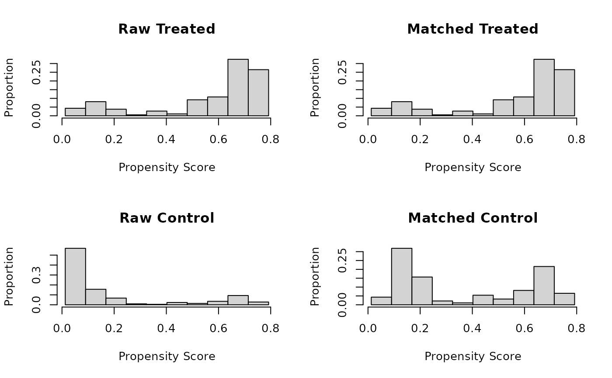
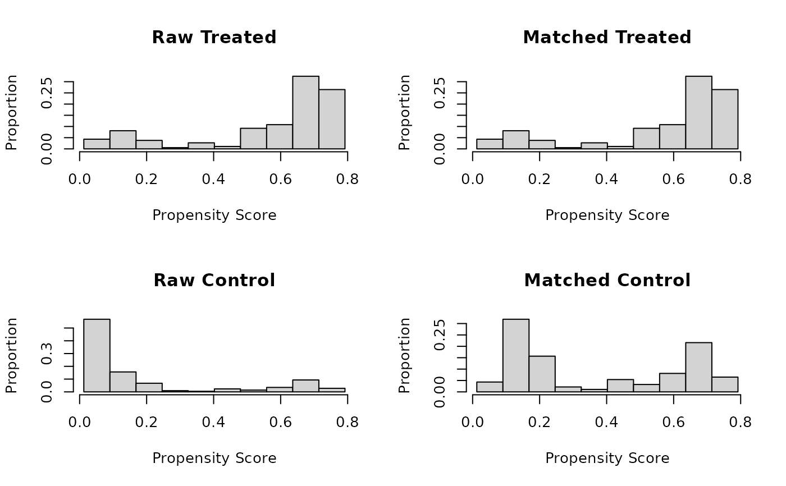
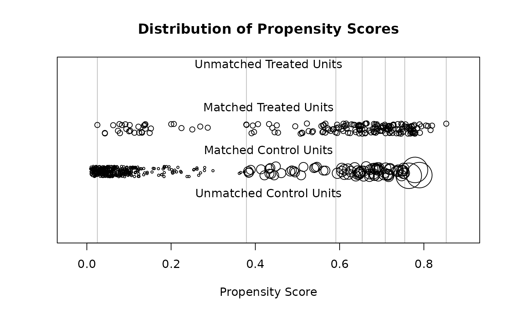
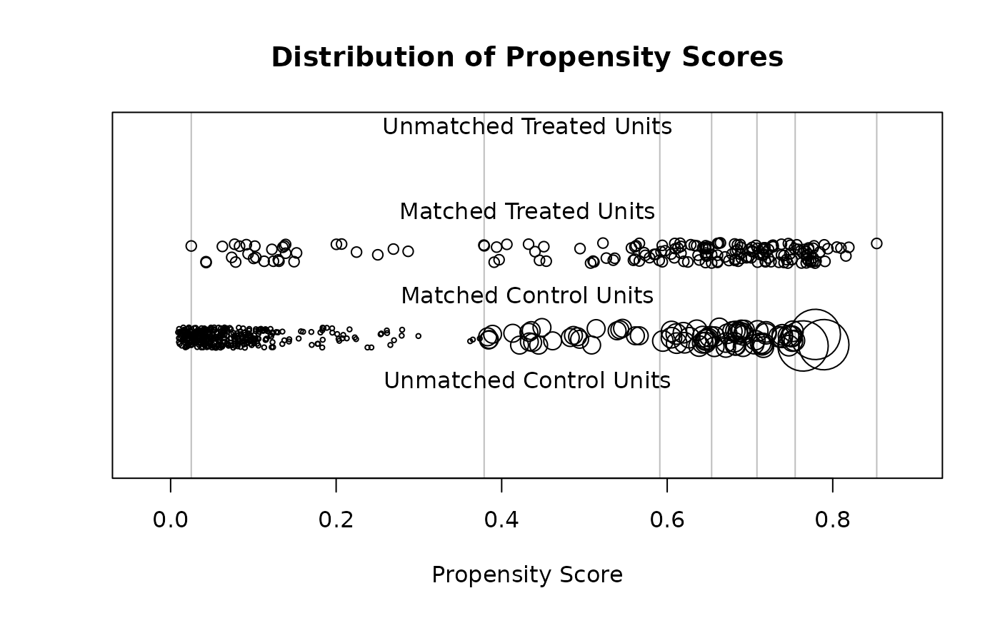

Generate Balance Plots after Matching and Subclassification
plot.matchit.RdGenerates plots displaying distributional balance and overlap on covariates and propensity scores before and after matching and subclassification. For displaying balance solely on covariate standardized mean differences, see plot.summary.matchit(). The plots here can be used to assess to what degree covariate and propensity score distributions are balanced and how weighting and discarding affect the distribution of propensity scores.
Arguments
- x
a
matchitobject; the output of a call tomatchit().- type
the type of plot to display. Options include
"qq","ecdf","density","jitter", and"histogram". See Details. Default is"qq". Abbreviations allowed.- interactive
logical; whether the graphs should be displayed in an interactive way. Only applies fortype = "qq","ecdf","density", and"jitter". See Details.- which.xs
with
type = "qq","ecdf", or"density", for which covariate(s) plots should be displayed. Factor variables should be named by the original variable name rather than the names of individual dummy variables created after expansion withmodel.matrix.- subclass
with subclassification and
type = "qq","ecdf", or"density", whether to display balance for individual subclasses, and, if so, for which ones. Can beTRUE(display plots for all subclasses),FALSE(display plots only in aggregate), or the indices (e.g.,1:6) of the specific subclasses for which to display balance. When unspecified, ifinteractive = TRUE, you will be asked for which subclasses plots are desired, and otherwise, plots will be displayed only in aggregate.- ...
arguments passed to
plot()to control the appearance of the plot. Not all options are accepted.
Details
plot.matchit makes one of five different plots depending on the argument supplied to type. The first three, "qq", "ecdf", and "density", assess balance on the covariates. When interactive = TRUE, plots for three variables will be displayed at a time, and the prompt in the console allows you to move on to the next set of variables. When interactive = FALSE, multiple pages are plotted at the same time, but only the last few variables will be visible in the displayed plot. To see only a few specific variables at a time, use the which.xs argument to display plots for just those variables. If fewer than three variables are available (after expanding factors into their dummies), interactive is ignored.
With type = "qq", empirical quantile-quantile (eQQ) plots are created for each covariate before and after matching. The plots involve interpolating points in the smaller group based on the weighted quantiles of the other group. When points are approximately on the 45-degree line, the distributions in the treatment and control groups are approximately equal. Major deviations indicate departures from distributional balance. With variable with fewer than 5 unique values, points are jittered to more easily visualize counts.
With type = "ecdf", empirical cumulative density function (eCDF) plots are created for each covariate before and after matching. Two eCDF lines are produced in each plot: a gray one for control units and a black one for treated units. Each point on the lines corresponds to the proportion of units (or proportionate share of weights) less than or equal to the corresponding covariate value (on the x-axis). Deviations between the lines on the same plot indicates distributional imbalance between the treatment groups for the covariate. The eCDF and eQQ statistics in summary.matchit() correspond to these plots: the eCDF max (also known as the Kolmogorov-Smirnov statistic) and mean are the largest and average vertical distance between the lines, and the eQQ max and mean are the largest and average horizontal distance between the lines.
With type = "density", density plots are created for each covariate before and after matching. Two densities are produced in each plot: a gray one for control units and a black one for treated units. The x-axis corresponds to the value of the covariate and the y-axis corresponds to the density or probability of that covariate value in the corresponding group. For binary covariates, bar plots are produced, having the same interpretation. Deviations between the black and gray lines represent imbalances in the covariate distribution; when the lines coincide (i.e., when only the black line is visible), the distributions are identical.
The last two plots, "jitter" and "histogram", visualize the distance (i.e., propensity score) distributions. These plots are more for heuristic purposes since the purpose of matching is to achieve balance on the covariates themselves, not the propensity score.
With type = "jitter", a jitter plot is displayed for distance values before and after matching. This method requires a distance variable (e.g., a propensity score) to have been estimated or supplied in the call to matchit(). The plot displays individuals values for matched and unmatched treatment and control units arranged horizontally by their propensity scores. Points are jitter so counts are easier to see. The size of the points increases when they receive higher weights. When interactive = TRUE, you can click on points in the graph to identify their rownames and indices to further probe extreme values, for example. With subclassification, vertical lines representing the subclass boundaries are overlay on the plots.
With type = "histogram", a histogram of distance values is displayed for the treatment and control groups before and after matching. This method requires a distance variable (e.g., a propensity score) to have been estimated or supplied in the call to matchit(). With subclassification, vertical lines representing the subclass boundaries are overlay on the plots.
With all methods, sampling weights are incorporated into the weights if present.
Note
Sometimes, bugs in the plotting functions can cause strange layout or size issues. Running frame() or dev.off() can be used to reset the plotting pane (note the latter will delete any plots in the plot history).
See also
summary.matchit() for numerical summaries of balance, including those that rely on the eQQ and eCDF plots.
plot.summary.matchit() for plotting standardized mean differences in a Love plot.
cobalt::bal.plot() for displaying distributional balance in several other ways that are more easily customizable and produce ggplot2 objects. cobalt functions natively support matchit objects.
Examples
data("lalonde")
m.out <- matchit(treat ~ age + educ + married +
race + re74, data = lalonde,
method = "nearest")
plot(m.out, type = "qq", interactive = FALSE,
which.xs = c("age", "educ", "married"))
 plot(m.out, type = "histogram")

s.out <- matchit(treat ~ age + educ + married +
race + nodegree + re74 + re75,
data = lalonde, method = "subclass")
plot(s.out, type = "density", interactive = FALSE,
which.xs = c("age", "educ", "married"),
subclass = 3)
plot(m.out, type = "histogram")

s.out <- matchit(treat ~ age + educ + married +
race + nodegree + re74 + re75,
data = lalonde, method = "subclass")
plot(s.out, type = "density", interactive = FALSE,
which.xs = c("age", "educ", "married"),
subclass = 3)
 plot(s.out, type = "jitter", interactive = FALSE)

plot(s.out, type = "jitter", interactive = FALSE)
